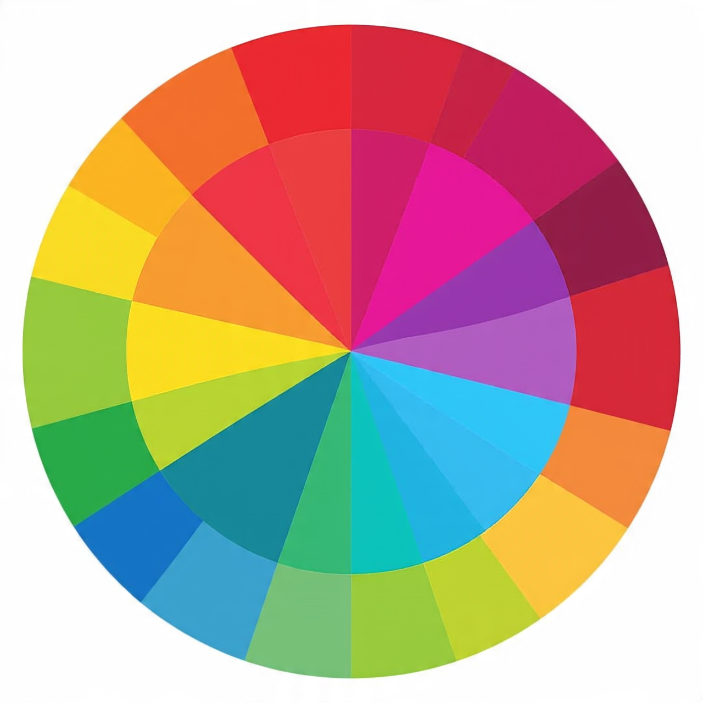

Hero Component
The Hero component is a visually striking section, often used at the top of a page to highlight key content, calls to action, or branding. Below are several hero variations for Axiom01, with code snippets and usage notes.

Welcome to Axiom01
Build beautiful, accessible, and themeable UIs with ease. Start your next project with Axiom01.
Get StartedAxiom01 in Motion
Experience dynamic UI with background video and clear calls to action.
Axiom01: Split Hero
Perfect for product launches, feature highlights, or landing pages. Split layout adapts to mobile screens.
Learn More
Launch with Axiom01
Flexible hero layouts, easy theming, and accessible design for every project.
Minimal Hero
Simple, clean, and effective hero for any page.
How to Use: Hero Components
Background Image Hero
<section style="position:relative;">
<img src="image.jpg" alt="Hero Background" style="width:100%;height:340px;object-fit:cover;border-radius:var(--a-border-radius-large);">
<div style="position:absolute;top:0;left:0;width:100%;height:100%;display:flex;flex-direction:column;justify-content:center;align-items:center;color:var(--a-color-on-primary-container);background:linear-gradient(90deg,rgba(0,0,0,0.45) 0%,rgba(0,0,0,0.15) 100%);border-radius:var(--a-border-radius-large);">
<h1>Hero Title</h1>
<p>Hero subtitle.</p>
<a href="#" class="axiom-btn">CTA</a>
</div>
</section>
Use a background image and overlay for readability. Center content and add a CTA button.
Background Video Hero
<section style="position:relative;">
<video autoplay loop muted playsinline poster="poster.jpg" style="width:100%;height:340px;object-fit:cover;border-radius:var(--a-border-radius-large);">
<source src="video.mp4" type="video/mp4">
</video>
<div style="position:absolute;top:0;left:0;width:100%;height:100%;display:flex;flex-direction:column;justify-content:center;align-items:center;color:var(--a-color-on-primary-container);background:linear-gradient(90deg,rgba(0,0,0,0.45) 0%,rgba(0,0,0,0.15) 100%);border-radius:var(--a-border-radius-large);">
<h1>Hero Title</h1>
<p>Hero subtitle.</p>
<a href="#" class="axiom-btn">CTA</a>
</div>
</section>
Use a background video for dynamic hero sections. Overlay text and CTA for clarity.
Split Hero Layout
<section style="display:flex;flex-wrap:wrap;align-items:center;gap:2rem;background:var(--a-color-primary-container);border-radius:var(--a-border-radius-large);box-shadow:var(--a-shadow-medium);padding:2rem;">
<div style="flex:2;min-width:220px;color:var(--a-color-on-primary-container);">
<h1>Hero Title</h1>
<p>Hero subtitle.</p>
<a href="#" class="axiom-btn">CTA</a>
</div>
<figure style="flex:1;min-width:220px;margin:0;">
<img src="image.jpg" alt="Split Hero" style="width:100%;max-width:320px;border-radius:var(--a-border-radius-large);">
</figure>
</section>
Split layout for hero sections with text and image side by side. Responsive and themeable.
Centered Hero with Icon and Multiple CTAs
<section style="display:flex;flex-direction:column;align-items:center;justify-content:center;background:var(--a-color-surface);border-radius:var(--a-border-radius-large);box-shadow:var(--a-shadow-medium);padding:2.5rem 1rem;">
<span style="font-size:3rem;color:var(--a-color-primary);margin-bottom:1rem;">🚀</span>
<h1>Hero Title</h1>
<p>Hero subtitle.</p>
<div style="display:flex;gap:1rem;margin-top:1rem;">
<a href="#" class="axiom-btn">CTA 1</a>
<a href="#" class="axiom-btn" style="background:var(--a-color-secondary);color:var(--a-color-on-secondary);">CTA 2</a>
</div>
</section>
Use icons, large headings, and multiple CTAs for a flexible hero section.
Minimal Hero
<section style="background:var(--a-color-tertiary-container);border-radius:var(--a-border-radius-large);box-shadow:var(--a-shadow-small);padding:2rem;text-align:center;">
<h1 style="color:var(--a-color-tertiary);">Hero Title</h1>
<p style="color:var(--a-color-on-tertiary-container);">Hero subtitle.</p>
<a href="#" class="axiom-btn">CTA</a>
</section>
Minimal hero for clean, focused landing pages.
Best Practices & Theming
- Use CSS variables for all colors, spacing, and radius.
- Prefer semantic HTML for accessibility.
- Overlay gradients improve text readability.
- Test hero components in both light and dark themes.
- Use large, clear CTAs and headings for impact.